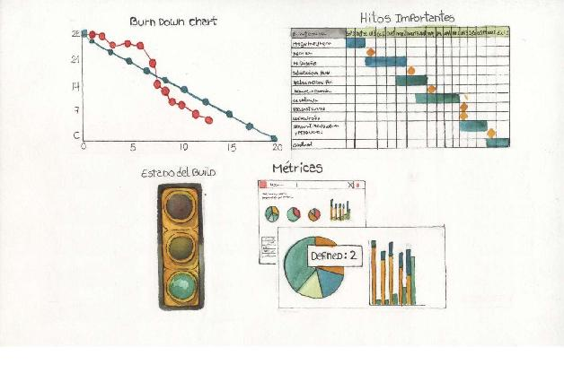
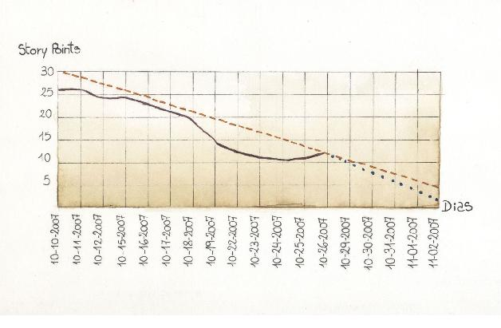
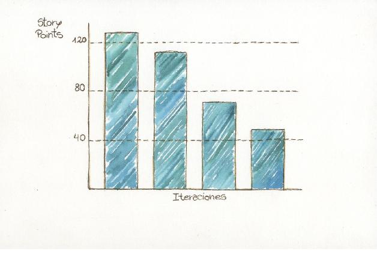
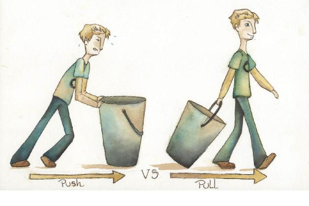
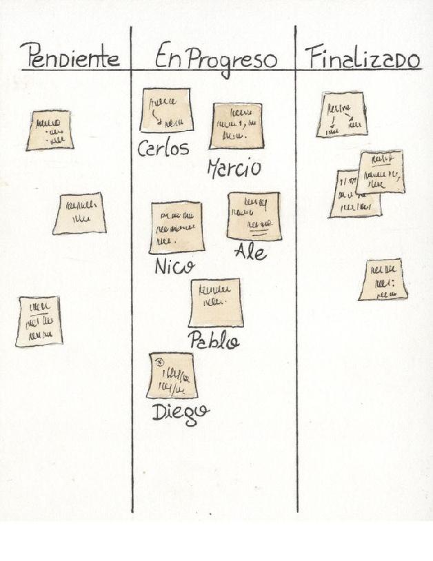
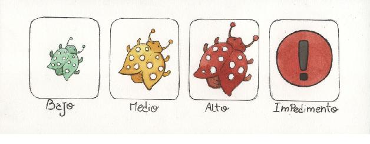
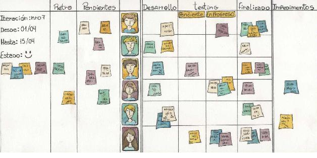
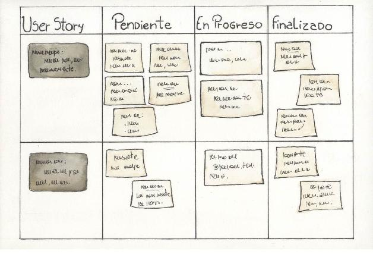
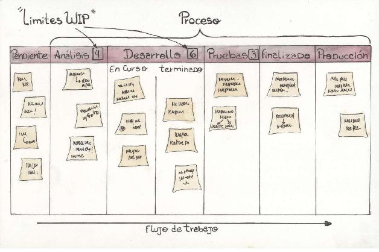
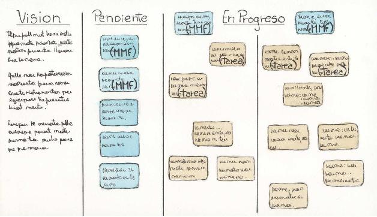

Irradiando información
Son las 9:30, hora de la reunión diaria. Todo el equipo se pone de pie y se acerca a la pizarra de tareas que está próxima a los escritorios de trabajo. Carlos pide iniciar la reunión.
– Ayer terminé con el segundo proceso y todos sus tests –dice mientras toma la tarjeta que estaba en la columna Desarrollo y la pasa a la de Testing Funcional y agrega– hoy voy a continuar con la pantalla de búsqueda y la tarea que surgió de la retrospectiva de investigar sobre herramientas para la generación de gráficos.
Toma ambos papeles, uno de la columna Retrospectiva y otro de Pendientes, las pasa a desarrollo y concluye:
– Ayer a última hora surgió un problema con el servidor de integración continua que está caído, quizá Nicolás lo pueda ver.
Nicolás, que tiene el rol de facilitador, agrega:
– Está bien, yo me encargo.
Anota el problema y en la pizarra lo ubica en la columna de Impedimentos generales. Diego, que está al lado de Carlos, continúa:
– Ayer estuve con el armado del nuevo ambiente en el servidor externo que hoy tengo que terminar –señala en la pizarra una tarea de desarrollo que tiene asignada– pero tengo un problema que no pude resolver, al parecer de permisos para crear la base de datos externa. Voy a necesitar ayuda de Carlos con esto. –y etiqueta la tarea con una marca que indica que tiene un impedimento– Hoy voy a comenzar el desarrollo de los perfiles. –Toma esa nueva tarea de las pendientes y la pasa a desarrollo.
Carlos comenta:
– Sí, Diego, después de la reunión nos juntamos y vemos lo de la base de datos.
– Ayer estuve con el desarrollo de los servicios web, me falta poco, y hoy voy a continuar con las notificaciones por email. No tengo impedimentos – acota Marcio y toma el papel de notificaciones por email de Pendientes y lo pasa a Desarrollo.
Alejandro, que es el responsable del producto, sugiere:
– Marcio, si no tenés inconvenientes, te pediría por favor si podemos terminar los prototipos para la funcionalidad de Reportes, ya que mañana me reúno con Jorge, el principal usuario. Me llamó hace unos minutos, y me gustaría llevarlos.
– De acuerdo, Ale, no hay problema, veamos primero los prototipos.
Y pasa la tarea de prototipos de Pendiente a Desarrollo. Enseguida, Nicolás comenta:
– Acordate que el límite de trabajo por persona es de dos tareas a la vez: ese fue el cambio que acordamos en la última retrospectiva.
– ¡Es verdad, gracias! Voy a agregar el límite de
WIP como nota a la pizarra si están todos de acuerdo. Todos aprueban la idea.
– Entonces, dejo la tarea de las notificaciones por email.
Y vuelve el papel a la columna de Pendientes. Pablo, que hace el testing funcional, continúa con su parte:
– Ayer terminé de automatizar todos los casos de prueba para la interfaz de usuario de la funcionalidad de registros, que es muy compleja, y no encontré ningún error, así que la paso a Finalizada.
– ¡Buenísimo!, ¡excelente! –todo el equipo festeja. Y sigue:
– Hoy voy a probar…
Veamos todo lo que pasó en esta reunión.
El equipo organizó en pocos minutos su trabajo del día con el soporte de la pizarra de tareas. No fue el facilitador (o desde un punto de vista no ágil, el gerente de proyecto) el que indicó qué tareas debía realizar cada uno en base a su calendario. La pizarra de tareas fue la herramienta que integró a todo el equipo (incluido el cliente) en la planificación, su actualización y mejora. Cada uno se autoasignó actividades, surgieron cambios, e incluso mejoras al proceso como, por ejemplo, visualizar el límite de tareas.
Todos pudieron ver el flujo del trabajo y tener una visión del estado general, en cuanto a qué hay que hacer, quién hizo y quién hará determinada tarea, qué progresos hubo, qué problemas hay que resolver y quién necesita ayuda. Hasta temas que el grupo se comprometió a mejorar de la retrospectiva anterior. Y no se tienen que acordar de nada. Todo está en la pizarra. No hay que acceder a ningún sitio web o software sofisticado de planificación, ni a ningún sistema de seguimiento de tareas. Solo hay que levantar la mirada.
El proceso es claro y transparente, y se ve en las columnas del tablero que se destaca por su sencillez. Todos lo entienden, incluso cualquier persona externa al proyecto que pasa por delante y lo ve.
El equipo comparte los progresos y la finalización de tareas, como también los impedimentos o potenciales problemas que emergen y quedan expuestos en el tablero y, a la brevedad y mediante la colaboración de todos, se resuelven.
La gestión visual aportó al seguimiento y control, a la organización, a los riesgos, a la calidad, a la integración, a la comunicación y a la colaboración del equipo. De esto se trata. Bienvenidos a este capítulo: Irradiando Información.
Gestión visual e irradiadores de información
La utilización de elementos y técnicas visuales para la organización del trabajo se conoce como gestión visual. Están aceptados en la comunidad ágil por su influencia positiva y por ser un gran complemento de otras técnicas de organización, como por ejemplo, Scrum.
Alistair Cockburn, uno los primeros impulsores del movimiento ágil de desarrollo de software y participante de la escritura del Manifiesto, definió a cada uno de estos elementos visuales como un irradiador de información, que es un indicador que tiene las siguientes características [Cockburn 2008a]:
• Está ubicado en un lugar donde la gente lo puede ver mientras trabaja o camina por la zona, en general en la oficina del equipo de trabajo.
• Casi siempre está sobre papel, muy rara vez en una página web donde se accede frecuentemente.
• Contiene información importante.
• Se actualiza fácilmente y en forma periódica.
• No es necesario tener que preguntar qué significa, ya que se entiende a simple vista.
Algunos ejemplos son el gráfico de burndown, el indicador del estado de los ‘builds’, una lista de impedimentos, métricas de errores, los riesgos activos de mayor exposición.
Estas representaciones colocadas en las paredes104 sirven para mantener al equipo organizado, ya que no se pierde el estado actual de los temas importantes. Solo requiere levantar la vista para encontrar la información más reciente del proyecto. No hay necesidad de hacer ningún esfuerzo, y se evitan pérdidas de tiempo por ubicar información. También son una forma de mostrar transparencia, ya que no se están ocultando datos entre pares del equipo ni tampoco hacia el cliente, generando así una mayor confianza.
Mediante el uso de irradiadores de información y su actualización frecuente, el equipo mantiene su progreso a la vista, anticipándose a los problemas, detectando mejoras en sus procesos, aumentando la colaboración y logrando así fortalecerse y autogestionarse.
Figura 13.1. Distintos ejemplos de irradiadores de información.

El gráfico de burndown
Este gráfico es un irradiador de información muy común en la gestión ágil y muchas veces se lo suele hacer en forma manual en el tablero del proyecto.
En el eje horizontal se representa la dimensión tiempo y en el vertical, el trabajo remanente. Las unidades utilizadas para cada una de estas dimensiones pueden variar dependiendo de lo que se pretenda mostrar.
En algunos casos se utiliza este gráfico para ver el avance durante una iteración. En tales casos, en el eje vertical se representan los story points remanentes y en el horizontal, los días de la iteración.
En el siguiente gráfico se muestra el burndown correspondiente al día 12 de una iteración donde el trabajo remanente es de 12 story points (línea oscura continua). También se aprecia una línea de guiones que representa una proyección basada en el ritmo actual de trabajo del equipo. Finalmente la línea punteada muestra el ritmo de trabajo que debería tener el equipo para llegar a completar el trabajo remanente al final de la iteración.
Figura 13.2. Gráfico de burndown de una iteración.

El gráfico de burndown también puede utilizarse para tener una visión de la evolución del proyecto a más alto nivel que la iteración actual. En este caso, se representan iteraciones en el eje horizontal y los story points correspondientes a las user stories aún no completadas en el vertical.
Figura 13.3. Gráfico de burndown de proyecto.

Cuando las iteraciones son de una semana, el gráfico deburndown de iteración no agrega mucho valor, a diferencia del burndown de proyecto que siempre agrega valor.
Un punto importante del gráfico de burndown es que no solo nos muestra una foto, sino que también muestra tendencia, lo cual nos sirve para ajustar nuestro plan de trabajo.
Los tableros
En la actualidad son muy utilizados los tableros en proyectos de desarrollo ágil, pero la idea tiene sus inicios en la década de 1950, a partir del sistema de producción de Toyota, basado en los principios de Lean manufacturing (o manufactura esbelta) y Just in Time105. El principal soporte de este sistema eran las tarjetas (o señalizaciones visuales) denominadas kanban.
Años más tarde, en 2001, Mary Poppendieck escribe un artículo [Poppendieck 2001] sobre el parecido entre las
metodologías ágiles, las ideas Lean y el sistema de producción de Toyota. En 2003, ya describía el uso de los tableros de tareas ágiles tipo Kanban en su libro Lean Software Development106 [Poppendieck2003] que se basa en los siete principios que revolucionaron la industria manufacturera, pero en este caso aplicados al desarrollo de software.
Los tableros nos permiten implementar un esquema de trabajo de tipo pull (tirar) donde cada uno va tomando la tarea que considere más conveniente, a diferencia de los sistemas push (empujar) en donde el trabajo es impuesto. De esta forma, en colaboración con todo el equipo, se puede ir autogestionando y decidiendo la próxima tarea a encarar o los cambios que conviene hacer al plan que está visible a todos y al alcance de sus manos.
Figura 13.4. Pull versus Push.

Existen innumerables formas de armar un tablero de tareas, según el proyecto, la necesidad, los gustos, la cultura, entre otros factores. No existe un formato estándar que se ajuste a todos los proyectos, sino que cada equipo debe decidir lo más conveniente e ir mejorándolo con el tiempo. Lo más sencillo es el tablero de tres columnas: pendiente, en progreso y finalizado:
Figura 13.5. El tablero más sencillo.

También se pueden armar opciones más completas que incluyan, por ejemplo: una columna para las tareas de la retrospectiva anterior, datos de la iteración (rango de fechas desde y hasta, número, estado actual), fotos de los miembros del equipo, columna para los impedimentos generales, límites de WIP (explicado más adelante) por persona o por columna, referencias a los tipos de tareas según los colores de las tarjetas, calcomanías para representar tareas particulares con impedimentos o defectos, etc.
Figura 13.6. Calcomanías para impedimentos y diferentes severidades de defectos.

O como propone Mike Cohn en lo que denomina Scrumboard [Cohn 2003], en donde cada fila representa una user story que es explotada en tareas, las cuales van avanzando por el tablero con su progreso.
Figura 13.7. Un tablero más completo. En este caso, las tareas de testing las realizaban dos personas y se usaron líneas horizontales para saber quien había hecho el desarrollo.

Por otro lado, existen los tableros Kanban que proponen, entre otras prácticas107, limitar el trabajo en progreso (también conocido con la sigla WIP de work in progress). Lo que se pretende es mantener baja la cantidad de trabajo en curso para ayudar a reducir la sobrecarga y el task switching, como también detectar problemas y cuellos de botella.
Si el equipo acumula muchas tareas en progreso, va a ser difícil detectar en el corto plazo si hay problemas con alguna. Un ejemplo es el de comenzar nuevas tareas cuando aparecen impedimentos en las actuales, y en vez de resolverlos se toman nuevas, acumulando así tareas empezadas, sin terminar ninguna. De esta manera, cuando no quedan tareas por comenzar, saltan a la vista los problemas que hay que resolver, pero ya no queda mucho tiempo para tomar acciones preventivas o correctivas que resulten eficientes.
Figura 13.8. Un Scrumboard.

Otro ejemplo puede ser el de un tester que está sobrecargado de tareas, pero con la ayuda de los límites de trabajo el equipo lo detecta y puede colaborar antes de seguir construyendo y dificultando más el flujo.
Figura 13.9. Aspecto de un tablero Kanban.

En todos los casos se busca que el flujo de las tareas sea continuo y en paralelo. Algunas funcionalidades se pueden analizar mientras unas están en desarrollo y otras en pruebas, dependiendo de como esté organizado el proceso (representado por las columnas del tablero).
La última variante de tableros que vamos a ver es la pizarra de detective108 que propone James Shore para implementar el flujo de una pieza, basado en el sistema de producción de Toyota109. Lo que se busca es que el equipo complete una sola funcionalidad (MMF110) por vez, y de esta forma minimizar el trabajo en progreso y eliminar las colas de espera que generan un falso flujo continuo y aumentan el tiempo del ciclo (que es el período desde que se inicia el proceso hasta que termina, en este caso, es el tiempo en completar un MMF).
Figura 13.10. Pizarra de detective para flujo de una pieza.

En la pizarra de ejemplo se muestran dos columnas para los dos MMFs en progreso, ya sea porque tamaño del equipo lo amerita o por si existen otras consideraciones que lo requieran.
Para implementar este tipo de tablero se requiere que el equipo sea multifuncional, que trabajen todos en un mismo lugar físico, y utilizar prácticas de XP con fases simultáneas (testing, desarrollo, diseño, despliegue, análisis, planificación) a diferencia de Kanban en donde las fases están separadas y son las diferentes columnas del tablero. Es una versión de XP (eXtreme Programming) sin la fase de planificación ya que se necesita generar un flujo continuo y se hace utilizando MMFs en vez de iteraciones.
Recomendaciones complementarias
• Realizar las reuniones diarias frente a los tableros para poder actualizarlos y reflejar el estado de las tareas e impedimentos de la iteración. Es una buena práctica hacer todas las modificaciones entre columnas en el momento de la reunión, así todo el equipo está al tanto de los movimientos y de los últimos progresos e impedimentos. Para poner etiquetas, indicar defectos u otras actualizaciones no es necesario esperar a la reunión.
• Al armar el tablero, utilizar cinta eléctrica para las divisiones de las columnas, papeles autoadhesivos de diferentes colores para las tareas, marcador tipo fibrón para escribir (no usar bolígrafo) y hacerlo siempre en letra mayúscula imprenta para que sea legible. En el blog de Xavier Quesada [Quesada 2009] se pueden encontrar más recomendaciones de este tipo y muchos ejemplos de tableros.
• Para equipos distribuidos, un acercamiento a estas prácticas se puede encontrar utilizando tableros online. Existen diferentes opciones gratuitas y pagas en la web, y tienen como ventaja adicional que si se quieren sacar métricas, puede requerir menor esfuerzo. Pero si el equipo trabaja en el mismo lugar, es conveniente el uso de tableros físicos y la interacción cara a cara, con lo que se va a lograr una mejor colaboración que ante cualquier software de por medio.
• Probar las diferentes ideas que el equipo vaya detectando como potenciales mejoras. Por ejemplo, la limitación del trabajo en progreso es una buena práctica no solo en Kanban, sino también en cualquier tablero de tareas, para detectar problemas y cuellos de botella.
• Es conveniente llevar en la pizarra las tareas y acciones de la retrospectiva para hacerles un mejor seguimiento, ya sea en el mismo tablero o en otro dedicado.
• El uso de tableros no implica reemplazar un sistema de seguimiento de tareas y/o errores, que son más completos en cuanto a los datos a cargar sobre cada elemento de trabajo. Además proveen métricas, mantienen la trazabilidad y permiten guardar estas evidencias. Para muchas organizaciones se requiere su uso, en especial si se trabaja con un proceso de desarrollo certificado. En particular para el caso del manejo de errores, hay equipos que prefieren utilizar solo el software de seguimiento para los defectos menores, y los importantes tratarlos en la pizarra directamente para darle un flujo más rápido. Una buena opción, sobre todo, si se trabaja con testers, es hacer marcas con colores sobre las tareas, para indicar que tienen errores de determinada criticidad.
• Inicialmente definir las columnas de la pizarra en base al proceso actual de desarrollo, luego ir mejorando la estructura iteración a iteración. Por ejemplo, si el proceso actual para un determinado proyecto consta en hacer un fuerte análisis de los requerimientos, desarrollar, luego realizar un testing funcional interno, para luego hacer la entrega de la iteración al cliente; se podría comenzar con las columnas: pendiente, análisis, desarrollo, testing, finalizado.
• Los tableros de tareas se reinician al comenzar una iteración para colocar las tareas del nuevo plan. Ese es un buen momento para aprovechar y hacer las modificaciones de estructura, si es que se detectaron mejoras a experimentar, originadas a partir de una retrospectiva o por consenso de todo el equipo. Por ejemplo, agregar o eliminar columnas, cambiar tamaños, marcar nuevos límites de trabajo en progreso, etc.
En resumen
La agilidad pone el foco en las personas y su interacción, por lo que resulta muy conveniente que ciertos datos y elementos claves del trabajo estén disponibles para todos los miembros del equipo, de modo tal de facilitar la comunicación y la colaboración.
En este capítulo vimos que utilizando herramientas de gestión visual como irradiadores de información y tableros de tareas, se logra una real integración del equipo, generando mayor confianza y ayudando a su autogestión, consiguiendo así llegar más rápido y mejor a los objetivos propuestos.
104 [Beck 1999] hace referencia a ellas como Big Visible Charts (gráficas visibles y grandes).
105 Esta política industrial consiste básicamente en aumentar la eficiencia manteniendo el inventario al mínimo posible, produciendo sólo lo estrictamente necesario, en el momento solicitado y en las cantidades justas.
106 Véase sección de Lean en el Apéndice: “La riqueza de la diversidad”.
107 Véase la sección de Kanban en el Apéndice: “La riqueza de la diversidad”.
108 Del inglés: detective blackboard. Lo denominó así por como se ve en las series de televisión en donde el detective coloca toda la información del caso en la pizarra.
109 [Pawlik 2009] The Toyota System, One Piece Flow.
110 Minimum Marketable Feature, véase el capítulo “Planificación Constante”.